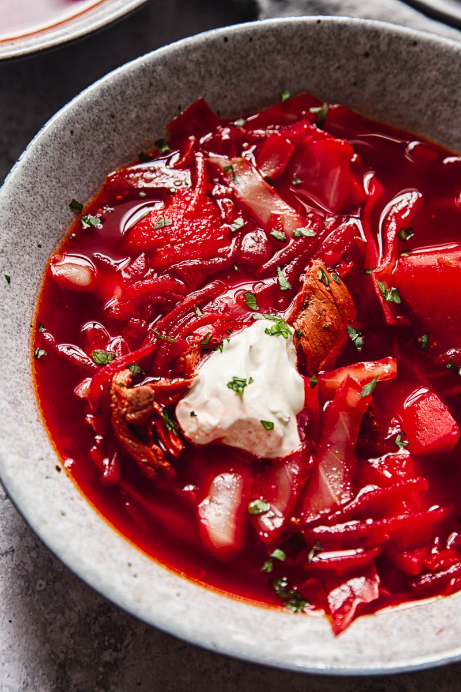

Borsch Recipe

This version keeps better because it is a meatless version but doesn't lack in flavor because it uses good quality chicken broth.
It's best to have all of the ingredients prepped and ready to go which makes this soup super easy and care free. Start by peeling, grating, chopping, slicing and dicing all of the vegetables for borscht. Once your potatoes are peeled and sliced, transfer them to a bowl of cold water to keep them from discoloring until ready for use.
We used to add cabbage but our children prefer it without so for years now we've been making it just like this without cabbage. If you prefer cabbage, add 1/4 to 1/2 small head of cabbage, thinly shredded, adding it when the potatoes are halfway cooked.
Ingredients
- 3 medium beets, peeled and grated
- 4 Tbsp olive oil, divided
- 8 cups chicken broth, 2 cups water
- 3 medium yukon potatoes
- 2 carrots, peeled and thinly sliced
For Zazharka:
- 2 celery ribs, trimmed and finely chopped
- 1 small red bell pepper, finely chopped, optional
- 1 medium onion, finely chopped
- 4 Tbsp ketchup or 3 Tbsp tomato sauce
Instructions
- Peel, grate and/or slice all vegetables (keeping sliced potatoes in cold water to prevent browning until ready to use then drain).
- Heat a large soup pot (5 1/2 Qt or larger) over medium/high heat and add 2 Tbsp olive oil. Add grated beets and sauté 10 minutes, stirring occasionally until beets are softened.
- Add 8 cups broth and 2 cups water. Add sliced potatoes and sliced carrots then cook for 10-15 minutes or until easily pierced with a fork.
- While potatoes are cooking, place a large skillet over medium/high heat and add 2 Tbsp oil. Add chopped onion, celery and bell pepper. Saute stirring occasionally until softened and lightly golden (7-8 minutes). Add 4 Tbsp Ketchup and stir fry 30 seconds then transfer to the soup pot to continue cooking with the potatoes.
- When potatoes and carrots reach desired softness, add 1 can of beans with their juice, 2 bay leaves, 2-3 Tbsp white vinegar, 1 tsp salt, 1/4 tsp black pepper, 1 pressed garlic clove, and 3 Tbsp chopped dill. Simmer for an additional 2-3 minutes and add more salt and vinegar to taste.
Back to Main Page